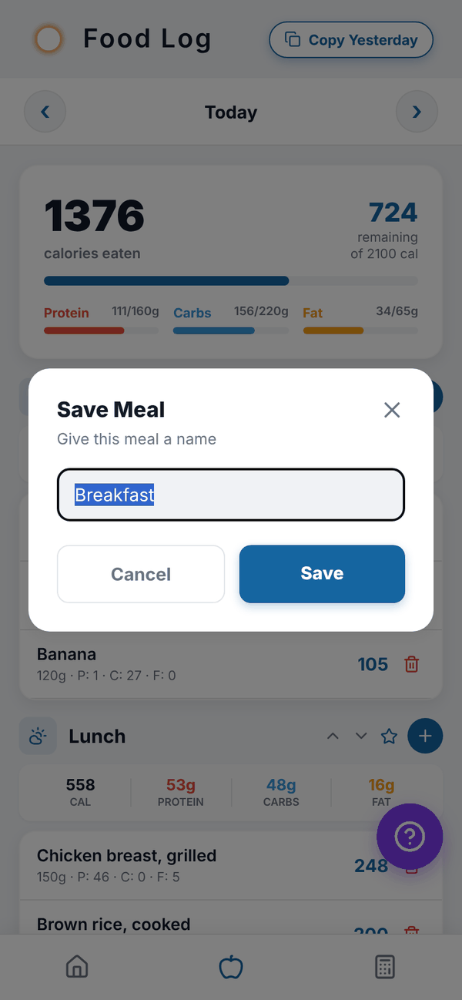
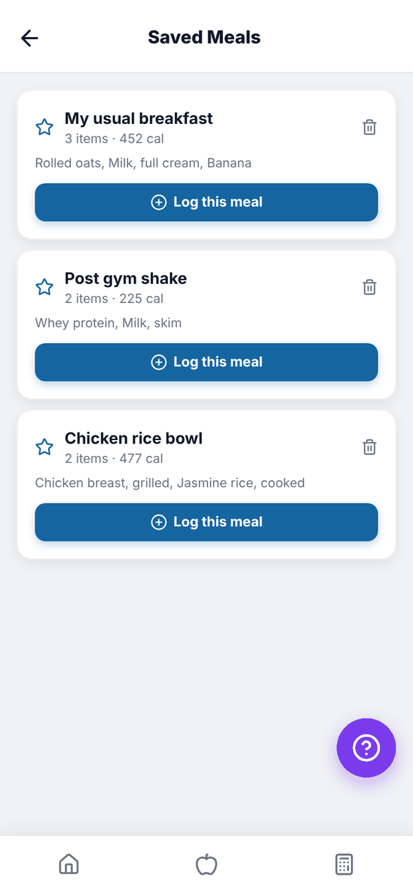
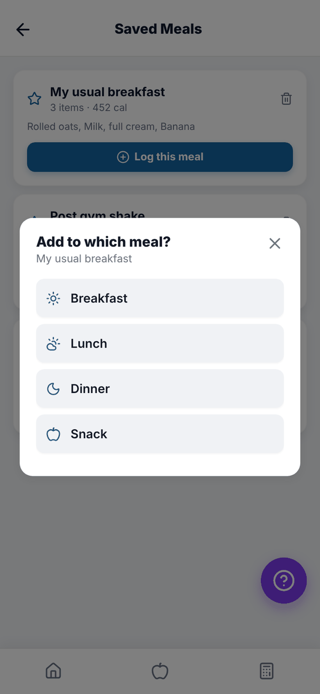
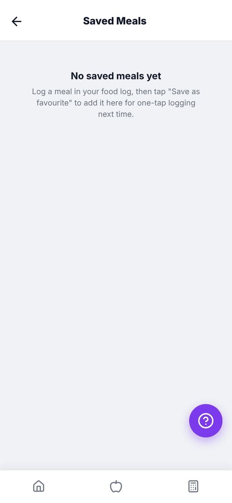

Totality Nutrition guide
Saved meals
Save a whole meal once and log it again in one tap, plus the 10 saved meal limit on Free.
A saved meal is a group of foods you eat often, like "My usual breakfast". Log it again in one tap instead of adding each food. Saved meals are Free up to 10, unlimited on Trial and Paid.
Save a meal#
- Log the foods in your food log as normal.
- Tap the star on that meal's header (next to the +). The star only shows once the meal has food in it.
- Give it a name in Save Meal, for example "Post gym shake".
- Tap Save. You'll see "Saved! ... Find it under Saved Meals."

Log a saved meal#
- Open Saved Meals: the star next to the search box in Add food, or the Saved Meals button at the bottom of your food log.
- Each card shows the meal name, how many items, total calories and the foods in it.
- Tap Log this meal.
- If you came from a meal's +, it goes straight into that meal. Otherwise Add to which meal? asks: Breakfast, Lunch, Dinner or Snack.


To delete a saved meal, tap the bin on its card and confirm. Logging it never changes the saved meal itself.
Saved meals on Free#
Free keeps up to 10 saved meals. When you have 10 and try to save another, you'll see "Saved meals are full". Delete one you don't use, or move to Nutrition for unlimited saved meals. Your existing saved meals always keep working.

Questions#
Can I edit a saved meal?
Not directly. Log it, change the foods in your food log, save the meal again with the star, and delete the old one.
My saved meals show in Totality too.
Yes. Saved meals are on your account, so they're shared with the Totality app if you use it with a trainer.
What happens to my saved meals if I go from a paid plan to Free?
They all stay and still log. You just can't save a new one while you have 10 or more.
Are saved meals the same as favourites?
No. A favourite is a single food starred in Add food. A saved meal is a whole group of foods.